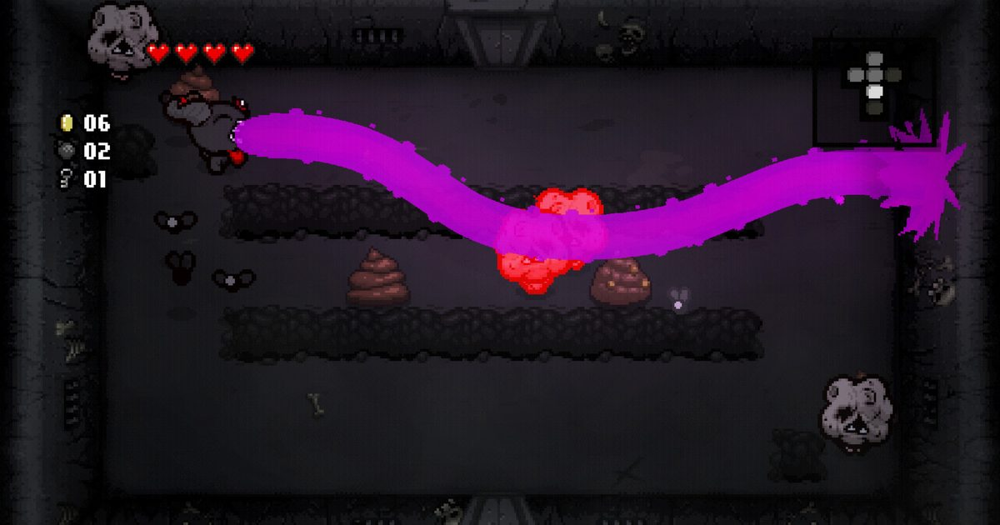

2026-11-22 · 行业深读 / 素材链条

先说结论：这件事最有意思的地方，不是「一款游戏用了 AI 音乐」，而是 同一批文件里，一部分的元数据被清干净了，一部分没有。 前者说明有人知道要清，后者说明这个人漏了。 这两件事同时成立，才把「不小心混进去的」这个说法堵死了。
11 月 19 日，《以撒的结合：忏悔+》登陆 PS5、Xbox Series X|S 与 Switch 2， Steam 版同日推送免费更新。官方在公告里写了一句很得意的话： 「年度最受期待的作品终于来了」——因为那天正是《GTA6》发售日。 更新里藏了一个恶搞模式：在每日挑战里输入种子 V1CE BSMT， 就能进入一个罪恶都市风格的跑局，专属武器、专属音乐。
11 月 20 日，Reddit 用户 ShweetsStuff 把这批音频文件拆了， 指出这些曲子来自 AI 音乐工具 Suno，并贴出了元数据截图。
11 月 21 日，Steam 近期好评率掉到 8%–9% （IGN 记 8%，Kotaku 记 9%，两家统计窗口差了几小时），评价栏变成 Overwhelmingly Negative。 创作者 Edmund McMillen 在 X 上写道：「一觉醒来看到一场烂摊子， 我显然不知道每日挑战里用了生成音乐，正在查这是怎么发生的并把它移除。」 几小时后，Nicalis 推送新版本，更新日志第一条：移除生成音乐文件。
三天。从彩蛋到公关灾难，比这个梗本身的寿命还短。
拆包结果比「用了 AI」这四个字具体得多。这个模式一共带了
14 个音频文件：7 首完整歌曲，加上若干前奏、尾奏变体。
其中 drivingsong1.ogg 的注释字段里留着
「made with suno」、生成时间
2026 年 10 月 30 日，以及一串工具侧的 ID。
其余文件的注释是空的——它们被后期编辑、重新导出过，清洗掉了。
这就是整件事的支点。如果这 14 个文件是同一次导出、同一套流程， 标记要么全在，要么全没。现在是一个留下、一堆清掉，只能说明： 流程里有「清理元数据」这一步，而且有人执行了，只是没执行完。 「完全不知情」在这个证据面前站不住——不是说 McMillen 在撒谎， 而是说这条链上至少有一个环节知道自己在做什么。
| 观察点 | 公开信息 | 它能推出什么 |
|---|---|---|
| 文件数量 | 14 个（7 首成曲 + 前奏/尾奏变体） | 不是随手放一首，是一个有规划的迷你原声带 |
| 元数据 | 1 个留「made with suno」，其余注释被清空 | 存在主动清洗动作，且没做全 |
| 时间戳 | 2026-10-30（上线前 20 天） | 不是上线前夜的应急补丁，是排进计划的交付 |
| 商店页 | 未做生成式 AI 使用披露 | 不只是品味问题，是规则问题 |
10 月 30 日生成，11 月 19 日上线，中间二十天。这个窗口不算宽裕，但也没窄到「来不及找人写」。 以撒的音乐史摊开来看就更刺眼：初代是 Danny Baranowsky 写的， 从 Rebirth 起换成 Ridiculon（Matthias Bossi 与 Jon Evans 二人组）， Afterbirth、Repentance 一直是他们。也就是说，这个系列有一个 现役的、合作了十二年的作曲搭档。
所以真正的问题不是「为什么用了 AI」，而是 「为什么没有找那个一直在的人」。 答案大概很平庸：20 天排不进档期，一个梗模式的预算不值得开一次正式的作曲委托。 但这里有个算术要摆出来——14 个文件里只有 7 首是成曲， 其余是改编与剪辑。这个量级对一支成熟的双人组合来说， 不是「做不完」，是「排不上」。而「排不上」的解法有三个： 延后这个梗、砍掉音乐只留音效、或者从素材库拿。 他们选了第四个。
McMillen 此前对 Eurogamer 说过，撞《GTA6》发售日是 Nicalis 的主意： 「『如果……会不会很好玩？』我说无所谓，挺有意思的…… 我们做完了，所以这个月必须发。」
这段话定了责任方向：宣发节点由发行商决定，配套素材由发行商管线产出， 创作者是最后一个知道的。而玩家骂的时候，@ 的是 Edmund McMillen。 这是独立游戏最常见的一种结构性错位——署名权在作者，供应链在发行商。 它解释了为什么回应会那么乱：McMillen 是真的不知道，Nicalis 是真的不解释。 补丁公告四行字，没有一句「这是怎么进来的」。
Steam 的「近期好评率」是个滚动窗口，不是历史总评。以撒的历史评价长期是 Overwhelmingly Positive，一个更新能把它压到 8%，说明 大量平时根本不写评价的人被激活了。 差评轰炸的真实机制从来不是说服，是动员沉默用户。
但把它简单读成「玩家反 AI」会误判。翻那些高赞评论，指向的不是技术， 而是「你以为我不会发现」：有人说「谢谢 Nicalis，在一个已经存在的游戏里塞 AI 垃圾」， 有人说「加 AI 应该构成对已付费玩家的退款理由」， 还有 Reddit 上那句最锋利的——「合成器浪潮是最好做的曲风，他们还是用了 AI。」
最后这句是关键。合成器浪潮规则清晰、和声简单、loop 结构固定， 本来就是 AI 最擅长的领域，也是人类作曲家最不费力的领域。 在一个「连最容易的部分都要省」的事实面前， 「技术中立」这套辩护没有落点。
Valve 的规则写得很清楚：商店页必须披露开发过程中生成式 AI 的使用方式。 《忏悔+》的页面没有。所以这件事在法律与平台规则层面的定性， 其实比道德层面干净得多——不是「该不该用」，是「用了没说」。
这也是为什么「移除」这个处置只能止住一半的火。文件可以删， 但页面上的沉默已经发生了。玩家对一家公司的信任，从来不建立在 「你没做错事」上，而建立在「你做错事时会不会先说」上。
补丁清单只有四条：移除生成音乐文件、修 Larynx + Car Battery 的 bug、 PC 已上线、已提交微软/任天堂/索尼，另外附一句 netcode 继续做。 PC 玩家当天就听不到了；主机玩家还在听。
这不是 Nicalis 偷懒，是主机认证的物理现实。但它带来一个叙事后果： 同一款游戏、同一段音乐，在不同平台上同时存在「已修复」和「未修复」两个事实。 在跨平台时代，任何内容层面的撤回都会留下一段 只有部分玩家能看见的中间态。公关上这段时间最难熬， 因为道歉与整改之间隔着一周的审核队列。
Eurogamer、IGN、Kotaku、Dexerto 都报了这条，信息基本一致，但集体漏了三层：
第一，没人算「7 首成曲」这个量。 报道普遍写「AI 生成音乐」，读者脑补的是一首 BGM。 实际是一个 7 首成曲、14 个文件的迷你原声带—— 这是「有规划地做了一套」，不是「临时找了一首」。
第二，没人把「部分文件被清洗」当成核心证据。 这条比元数据本身重要得多，它决定事件性质是「事故」还是「隐瞒」。
第三，没人接上音乐史。 如果不知道 Ridiculon 是这个系列十二年的现役作曲， 就解释不了玩家为什么反应这么大—— 他们不是在反对一项技术，是在看着一个「手作」的招牌被贴了标。
我们的评分：4.0 / 10。 这个分数评的是处置，不是游戏。以撒本体依然是那个 12 年后 还能刷新同时在线纪录的作品；4.0 全部扣在流程与沟通上。 扣分项：明知有清洗动作还留了一个手尾， 是最难辩护的一种失误；商店页缺披露，把「品味争议」升级成了「规则问题」； 补丁公告只讲结果不讲原因，等于把解释成本转嫁给玩家； 主机端还要继续听一周。 加分项：48 小时内从发现到补丁，速度快； 没有甩锅给外包、没有把责任推给「某个员工的个人行为」； McMillen 第一时间承认自己不知情，而不是先维稳。 一句话：他们做对了两件事——删得快、认得快； 但最该做的那件（在页面上写一行字）从头到尾没人做。
我们的观察：以撒的玩家群体是「手作感」最重的那一批。 这个系列的荣誉感建立在非常具体的东西上——每首歌对应一个结局、 一个 Boss、一层地牢的情绪。在一个以「音乐是内容的一部分」为荣的作品里 放 7 首生成曲，碰的不是技术立场，是「这游戏到底是谁做的」。
我们的观点：AI 不是问题，静默是问题。 玩家的愤怒有个更准确的名字，不是「你用了 AI」， 是「你以为我不会发现」。这两个名字对应完全不同的补救方案： 前者删掉就行，后者删掉不够，得说清楚。
我们的案例对比：同样是 2026 年，多家大厂在 Steam 页面 用一行小字标注了「开发中使用生成式 AI 辅助（美术/音频）」，社区讨论止于一帖， 没人觉得被冒犯。Nicalis 什么都没有标，代价是三天 Overwhelmingly Negative 和一条被写进百科的纪录。同一件事，成本差一行字。
我们的自查方法（你可以自己验）：
这次能被抓，靠的是 ogg 的注释字段。想验同类文件，
用 VLC 打开 → 工具 → 媒体信息 → 注释，或者命令行
ffprobe -show_format 文件名.ogg。
如果注释是空的，但编码器字符串高度统一、时长精确到整秒、
bitrate 整齐得反常，基本可以判定被重新导出过。
清洗元数据不等于消除痕迹——它只是把「有话说」变成了「不说话」，
而在一批文件里同时出现两种状态，本身就是一句话。
这件事真正会被记住的，不是「2026 年有款独立游戏用了 AI 音乐」。 是它演示了一条完整的路径：省一笔作曲费 → 洗一次元数据 → 漏一个文件 → 被一个 Reddit 用户拆开 → 三天掉到 8%。
链条上每一环都很小，小到单看都能解释。但连起来之后， 它就不是「一次失误」，而是一次关于「反正没人会看文件属性」的赌注。 赌输了，仅此而已。
信息来源与时间线：《以撒的结合：忏悔+》于 2026 年 11 月 19 日登陆 PS5 / Xbox Series X|S / Switch 2， Steam 版同日推送免费更新；11 月 20 日 Reddit 用户 ShweetsStuff 公布音频文件元数据； 11 月 21 日 Edmund McMillen 于 X 回应，Nicalis 推送移除补丁（PC 已生效，主机版已提交审核）。 报道来源包括 Eurogamer、IGN、Kotaku、Dexerto。文中「7 首成曲 / 14 个文件」「10 月 30 日」 「部分文件注释被清除」均引自公开拆包结果；「Nicalis 提的同日发售梗」引自 McMillen 此前对 Eurogamer 的表述。 截至发稿，Nicalis 未说明该批音频进入更新的具体流程。